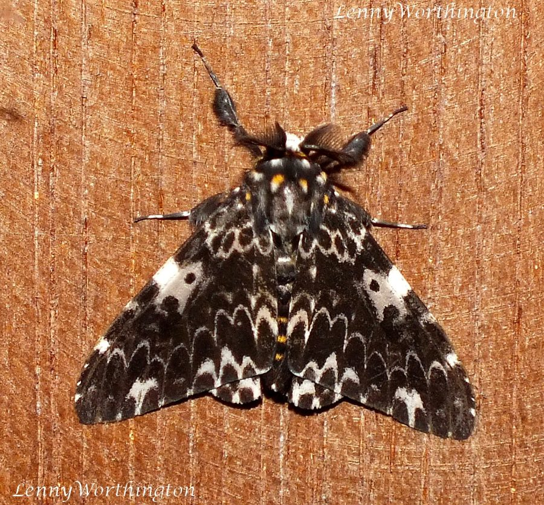

किनारेदार टसर पतंगाBordered Tussock Moth
Lymantria marginata · Erebidae · INS-0231

- Scientific name वैज्ञानिक नाम
- Lymantria marginata Walker, 1855
- Family कुल
- Erebidae
- Hindi हिंदी
- किनारेदार टसर पतंगा
- Local names स्थानीय नाम
- bordered tussock moth, lymantria marginata, kinaredar tussock patanga, bordered tussock
- Status here यहाँ की स्थिति
- native
- Movement आवागमन
- Resident, here all year
- Known from कहाँ दर्ज
- Others have published records from the Basti–Ayodhya districts बस्ती–अयोध्या के ज़िलों से दूसरों के प्रकाशित अभिलेख
- IUCN IUCN
- not evaluated
- Review समीक्षा
- not yet reviewed
When to look कब देखें
Present all year. साल भर मौजूद।
Tell it apart from इनसे अलग पहचानें
किनारेदार टसर पतंगा / Bordered Tussock Moth
Lymantria marginata Walker, 1855 — Erebidae
किनारेदार टसर पतंगा — बागों और छायादार बड़े पेड़ों के तनों पर पाया जाने वाला एक सफेद-मटमैला बड़ा पतंगा। इसके पंखों के किनारों पर गहरे कत्थई रंग की लहरदार पट्टियां बनी होती हैं। नर पतंगे के एंटीना पंख जैसे घने और कंघीदार होते हैं, जबकि मादा बहुत भारी और शांत होती है। इसकी रोएंदार इल्ली आम, नीम और शीशम के पत्तों को खाती है।
Quick Identification त्वरित पहचान
| Feature | Description |
|---|---|
| Habit | Medium to large robust tussock moth displaying strong sexual dimorphism |
| Forewing | Whitish to pale greyish-ochreous with dark fuscous wavy submarginal lines |
| Margins | Prominently bordered with dark brown or fuscous chequered marginal spots |
| Antennae | Strongly bipectinate and feathery in males; simple and filiform in females |
| Larva | Densely hairy tussock caterpillar with prominent urticating tufts |
Field tip: Inspect trunks of old shisham, mango, and neem trees during daylight for cryptically resting moths with wings folded roof-like.
हिंदी — कैसे पहचानें: मटमैले सफेद पंख जिन पर कत्थई लहरदार किनारे होते हैं, नर के एंटीना कंघी जैसे घने, और पेड़ों की छाल पर चिपके रहना।
Morphology आकारिकी
Male morphology: Head, thorax, and antennae pale greyish-ochreous; antennal branches long, dark, and feather-like. Forewing semi-diaphanous whitish, dusted with brown scales; marked with an antemedial waved line, a dark lunule on the discocellulars, a postmedial dentate line, and a distinct fuscous submarginal band running parallel to the outer margin. Hindwing white with a faint dark marginal line.
Female morphology: Considerably larger and more robust, with a heavy, stout abdomen covered in dense ochreous woolly scales. Wings broader and markings somewhat fainter or more diffuse.
Larval morphology: Full-grown caterpillar is stout, dark grey or brown, densely clothed in long stinging hairs with dense dorsal verrucae (hair-bearing tufts).
हिंदी: नर के एंटीना बहुत घने होते हैं। मादा का शरीर बड़ा और रोएंदार होता है।
Behaviour & Ecology व्यवहार और पारिस्थितिकी
Lymantria marginata displays pronounced nocturnal habits. Adults remain stationary throughout the daylight hours, resting flattened against tree bark where their mottled grey and white patterns match lichen-encrusted surfaces.
Males take flight early in the evening, flying with swift, zigzagging trajectories, using their sensitive bipectinate antennae to detect female sex pheromones from considerable distances. Heavy-bodied females fly rarely, often laying eggs on the very tree trunk where they emerged.
The caterpillars feed on tree canopies. When young, they feed gregariously on leaf surfaces before dispersing as solitary older instars. Larval hairs contain irritating compounds that can cause contact dermatitis.
हिंदी: नर पतंगा रात में उड़ता है और अपने कंघीदार एंटीना से मादा की महक सूंघकर उसे खोजता है। भारी मादा बहुत कम उड़ती है। इसकी इल्ली के रोएं त्वचा पर खुजली करते हैं।
Life Cycle / Phenology जीवन चक्र
| Season / Month | Stage & Activity |
|---|---|
| March–April (Spring) | Overwintered egg masses hatch as young leaves flush on orchard trees |
| May–July (Summer/Monsoon) | Caterpillars feed actively through six instars on tree canopies |
| August–September | Pupation occurs in loose hairy cocoons spun on tree trunks or bark cracks |
| October–November | Main adult flight and mating; females deposit felted egg masses on bark |
| December–February (Winter) | Overwintering primarily as egg masses protected by maternal abdominal hairs |
Northern Indian populations typically undergo one major generation per year, with an optional partial second brood during extended warm autumn conditions.
हिंदी: बसंत में पेड़ों पर नए पत्ते आते ही इसके अंडों से बच्चे निकलते हैं। बरसात में इल्लियां पत्ते खाकर बड़ी होती हैं। मादा पेड़ की छाल पर रोएं से ढके अंडों के गुच्छे देती है।
Host Plants or Prey आहार
- Forest and Avenue Trees: Foliage of Shisham (Dalbergia sissoo), Neem (Azadirachta indica), and Jamun (Syzygium cumini).
- Horticultural Orchard Trees: Feeds on leaves of Mango (Mangifera indica) and Ziziphus.
- Adult Diet: Adults possess reduced, non-functional mouthparts and do not feed, relying entirely on stored larval fat reserves.
हिंदी: इसकी इल्ली शीशम, नीम, जामुन और आम के पत्तों को खाती है। वयस्क पतंगे का मुंह विकसित नहीं होता और वह भोजन नहीं करता।
Predators / Natural Enemies शत्रु
- Parasitoids: Tachinid flies and braconid wasps heavily parasitize developing tussock caterpillars.
- Predatory Insects: Large praying mantids and reduviid assassin bugs capture adults resting on trunks.
- Birds: Cuckoos and Black Drongo occasionally consume hairy caterpillars, which most other birds avoid.
हिंदी: कोयल और काले भुजंगे (ड्रोंगो) इसकी रोएंदार इल्ली को खा लेते हैं। परजीवी मक्खियां इल्ली के भीतर अपने अंडे देकर उसे मार देती हैं।
Agricultural / Human Relevance कृषि प्रासंगिकता
- Tree defoliation: Outbreaks occasionally cause conspicuous defoliation on village shisham avenues and orchard mango trees, though healthy mature trees normally refoliate.
- Dermal hazard: Handling caterpillars or cocoons causes localized skin rash and urticaria due to fine barbed stinging setae.
- Forestry management: Traditional foresters use sticky trunk bands or grease bands to prevent wingless or crawling females and young caterpillars from ascending valuable timber trees.
हिंदी: कभी-कभी यह शीशम और आम के पेड़ों के सारे पत्ते खा जाती है। इसकी इल्ली को छूने से त्वचा पर तेज खुजली और दाने हो जाते हैं, इसलिए इसे हाथ से नहीं छूना चाहिए।
Expected Locally स्थानीय रूप से अपेक्षित
Not a field record. Written from published accounts for eastern Uttar Pradesh. No confirmed local sighting yet — if you have seen it, that is what the atlas needs.
अभी तक स्थानीय पुष्टि नहीं। यह विवरण प्रकाशित स्रोतों से है, किसी अवलोकन से नहीं।
Expected across the agroforestry plantations, riverine forests, and mango orchards of Basti, Ayodhya, and Sant Kabir Nagar wherever shisham and broadleaved host trees are well established. GBIF holds published records from these districts. A first local record would be a dated photograph of a resting adult on bark or an egg cluster with maternal hairs, submitted through the About page.
Distribution वितरण
Global range: Native to South Asia, including India, Nepal, Pakistan, Bangladesh, and Myanmar.
In India: Widely recorded across northern India, the Gangetic plain, the Himalayas, Central India, and parts of the south (Hampson 1892).
In Uttar Pradesh: Distributed throughout the plains across social forestry plantations and orchard tracts.
In Basti district / eastern UP: Expected along canal avenues and rural orchards in all administrative blocks.
हिंदी: यह पतंगा पूरे भारत, नेपाल और पाकिस्तान के मैदानी और पहाड़ी वनों में पाया जाता है। उत्तर प्रदेश के लगभग सभी जिलों में इसकी उपस्थिति दर्ज है।
Research Questions शोध प्रश्न
- What is the incidence of contact urticaria reported from handling Lymantria marginata in Basti? / बस्ती में इस पतंगे की इल्लियों से लोगों में त्वचा पर खुजली के कितने मामले सामने आते हैं?
- Which local bird species regularly prey on mature hairy larvae in Awadh shisham plantations? / अवध में शीशम के पेड़ों पर कौन से स्थानीय पक्षी इन रोएंदार इल्लियों को खाते हैं?
- What is the extent of canopy defoliation caused during seasonal peak larval flushes? / बरसात के मौसम में इसके प्रकोप से पेड़ों के पत्तों का कितना प्रतिशत नुकसान होता है?
- How do non-chemical tree trunk banding methods perform against ascending caterpillars? / तनों पर गोंद की पट्टी बांधने से इल्लियों को चढ़ने से कितना रोका जा सकता है?
- Can village children safely identify the maternal felted egg masses on tree bark without touching them? / क्या ग्रामीण बच्चे पेड़ की छाल पर रोएं से ढके अंडों के गुच्छों को बिना छुए पहचान सकते हैं?
Similar Species मिलती-जुलती प्रजातियाँ
| Species | How to tell apart | हिंदी |
|---|---|---|
| Lymantria ampla | Forewings pale reddish-brown; abdomen flushed with bright pink or crimson | पंख हल्के कत्थई, पेट चमकीला गुलाबी या लाल |
| Castor Woolly Bear Moth (Olepa ricini) | Forewings grey-brown with round spots; abdomen crimson with black bands | पंखों पर गोल कत्थई धब्बे, पेट लाल-काला |
| Bihar Hairy Caterpillar Moth (Spilarctia obliqua) | Wings pale straw-yellow with oblique speck rows; abdomen bright crimson-red | पंख हल्के पीले, पेट गहरा लाल और काला |
Field rule: A whitish to pale grey tussock moth with feathery male antennae and dark wavy submarginal borders on the wings identifies Lymantria marginata.
Taxonomy & Classification वर्गीकरण
Original description. Described by Francis Walker in 1855 as Lymantria marginata in List of the Specimens of Lepidopterous Insects in the Collection of the British Museum, part 4.
Subspecies. Monotypic across northern India; recognized without formal subspecific divisions.
Family and order placement. Placed in the family Erebidae, subfamily Lymantriinae (tussock moths), in the order Lepidoptera.
IUCN status rationale. Not evaluated on the IUCN Red List; an abundant native forestry insect with widespread populations across the Indian subcontinent.
हिंदी: फ्रांसिस वॉकर ने 1855 में इसका पहला वैज्ञानिक विवरण दिया था। यह इरेबिडी कुल और लाइमैन्ट्रिनी उपकुल का सदस्य है।
Photo Gallery फोटो गैलरी
No photos yet — add field photos to media/species/bordered_tussock_moth/ and run node scripts/sync_photos.js.
Photos needed आवश्यक फोटो
- [ ] Adult male resting cryptically on tree trunk (पेड़ के तने पर बैठा नर पतंगा)
- [ ] Large female with feathery antennae visible (बड़ी मादा पतंगा का चित्र)
- [ ] Hairy caterpillar feeding on shisham foliage (शीशम के पत्तों पर रोएंदार इल्ली)
References संदर्भ
- Walker, F. (1855). List of the Specimens of Lepidopterous Insects in the Collection of the British Museum, part 4. British Museum, London.
- Hampson, G.F. (1892). The Fauna of British India, including Ceylon and Burma: Moths, vol. 1, p. 463. Taylor and Francis, London.
- Singh, P.R. (1993). Cephalic sclerites and chaetotaxy of a hairy caterpillar, Lymantria marginata Wlk. (Lepidoptera: Lymantriidae). The Journal of Research on the Lepidoptera, 30, pp. 272–278. doi:10.5962/p.266654
- Schintlmeister, A. (2004). The taxonomy of the genus Lymantria Hübner, 1819. Quadrifina, 7, pp. 1–248.
- Robinson, G.S., Ackery, P.R., Kitching, I.J., Beccaloni, G.W. & Hernández, L.M. (2001). Hostplants of the Moth and Butterfly Caterpillars of the Oriental Region. Natural History Museum, London.
- GBIF Occurrence Data — Lymantria marginata Walker, 1855, India (2025).
Source file: species/fauna/insects/bordered_tussock_moth.md